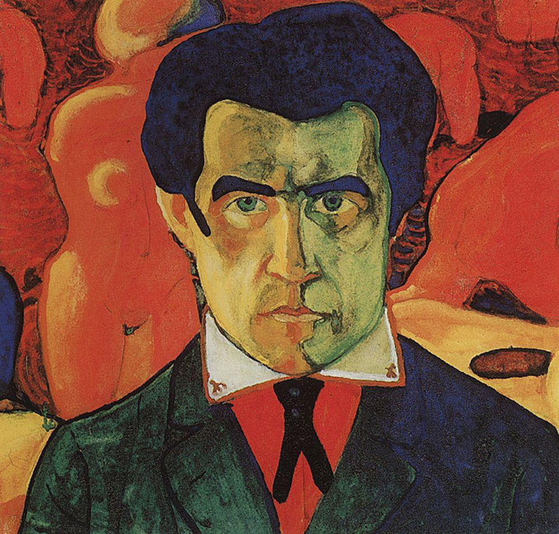

- Весь мир будет называть Казимира гением века,
- Увидевшего крупицы будущего.
- (Игорь Малевич)
- Увидевшего крупицы будущего.

Он, Кази — мир, пришёл на Землю, чтобы показать людям царящее в мире зло и подтвердить пророчество Исайи: «Вот, приходит день Господа лютый, с гневом и пылающею яростью, чтобы сделать землю пустынею и истребить с неё грешников её» (Исайя 13:9).
Казимир — боец, рыцарь печального (и яростного) образа. Он разрушает старое во имя сотворения Нового, и в этом — его величие. Он не был одинок в своей борьбе. Конец ХIХ — начало ХХ века было временем великих открытий, преобразований, изобретений во всех сферах жизни, в том числе и в искусстве. Ведь искусство — зеркало жизни. Оно должно поспевать за жизнью, и даже предсказывать будущее.
Искусство Казимира Малевича выполнило и продолжает выполнять обе эти миссии. Он критикует академическую живопись за её «отсталость от жизни»: «Академия — заплесневелый погреб, в котором самобичуют искусство. Гигантские войны, великие изобретения, победа над воздухом, быстрота перемещения, телефоны, телеграфы, дредноуты — царство электричества. А наша художественная молодёжь пишет Неронов и римских полуголых воинов.
Честь футуристам, которые запретили писать женские окорока, писать портреты и гитары при лунном свете. Они сделали громадный шаг — бросили мясо и прославили машину.
Новая железная машинная жизнь, рёв автомобилей, блеск электрических огней, ворчание пропеллеров — разбудили душу, которая задыхалась в катакомбах старого разума и вышла на сплетение дорог неба и земли.
Если бы все художники увидели перекрёстки этих небесных дорог, если бы они охватили этот чудовищный пробег и сплетения наших тел с тучами в небе — тогда бы не писали хризантемы». (К. Малевич. От кубизма и футуризма к супрематизму).
В своей живописи Малевич создаёт картину современного и будущего мира — своего рода утопию прекрасного будущего, где царит свобода , равенство, справедливость и уважение прав человека. Но всё это высказано языком символов и знаков, то есть абстрактных форм, которые могут быть прочитаны по-разному. Поэтому язык супрематизма Малевича подобен языку древних пророков — их речь звучит правдиво во все времена. Казимир в своих откровениях уподобляется пророку. Он говорит не только о настоящем, но в то же время о будущем, черпая поддержку своим идеям в далёком прошлом.
Казимир — это сферическое зеркало, отразившее свою эпоху.
Взгляните на этот автопортрет 1910 года.
Здесь мы видим черты человека, живущего в ХХ веке,о котором сказал Поэт:
- «Двадцатый век… ещё бездомней,
- Ещё страшнее жизни мгла
- (Ещё чернее и огромней
- Тень Люциферова крыла)….
- И черная, земная кровь
- Сулит нам, раздувая вены,
- Все разрушая рубежи,
- Неслыханные перемены,
- Невиданные мятежи.
- Ещё страшнее жизни мгла
Человек на портрете — воплощение мужества, он готов к борьбе — суровой, жестокой, беспощадной. Его взгляд — прямой и непреклонный, густые брови нахмурены, губы плотно сжаты, он идёт прямо к своей цели.
Этот человек объявил войну старому миру и старому искусству. Он призывает отречься от старого мира и отряхнуть его прах от своих ног.
Он уверен в победе, не знает страха. Его черный галстук подобен букве V — знаку Победы (Виктории); в перевёрнутом виде он являет знак Горы — обиталища древних богов. Лицо освещено снизу красным светом: это адское пламя, оно пылает даже в его ноздрях. Красное зарево целиком заливает фон портрета. На берегу красно-черного моря видны фигуры двух обнажённых женщин, окрашенные в чисто-красный цвет без оттенков.
Фон портрета — это символическое изображение мира, в котором живёт художник. Во время жизни Малевича мир изобиловал злом, которое ассоциировалось с различными оттенками красного: «Если будут грехи ваши как кровь — как вoлну убелю».
Композиция фона автопортрета может показаться странной и неуместной. В жизни и мыслях воина не должно быть места морским пляжам с обнажёнными женщинами. На самом деле пейзаж на фоне символичен — здесь визуализируется опасность и коварство числа Два, понимаемого как знак раздвоения (начала разрушения), противостояния (мужского и женского начал), всяческих сомнений и внутренней борьбы. Ведь порядковый номер Женщины — два, а мужчины — один. На берегу моря две женские фигуры в двух видах — спереди и сзади, в двух позах — стoя и в наклоне. Такая же раздвоенность наблюдается на лице мужчины: правая и левая половины его лица окрашены в контрастирующие цветa. Хотя они и не дополнительны, — но цвет левой половины лица портрета и цвет фона составляют очень сильный контраст. Так же сильно контрастируют обширные черные пятна с красными.
В целом и выражение лица, и колорит портрета действуют на психику зрителя возбуждающе, он как будто слышит призыв к борьбе за новую жизнь, за свободу… «Мы наш, мы новый мир построим!»
Победа над Солнцем
- …все видят Солнце, уже мёртвое
- Ибо в новом преображении оно не нужно.
- В новом чуде нет ни солнца, ни звёзд.
- Потух рай.
- Рождается око нового начала. (К. Малевич)
- Ибо в новом преображении оно не нужно.
Увертюрой к рождению супрематизма была работа над декорациями и костюмами к опере «Победа над Солнцем». Музыку написал М.Матюшин, текст — В. Хлебников и А. Кручёных. Первая постановка состоялась в Петербурге 3 декабря 1913 года.
Содержание оперы — утопическая история завоевания новой жизни, новой земли и неба, картина грядущего, где счастливые будетляне, освобождённые от всемирного тяготения, обрели новую прекрасную жизнь и уже забыли прошлое, «полное тоски ошибок…ломаний и сгибаний колен…».
В прологе зрителям обещают:
- «Зовавы позовут вас, как и полунебесные оттудни.
- Минавы расскажут вам, кем вы были некогда.
- Бытавы — кто вы, бывавы — кем вы могли быть.
- Никогдавли пройдут, как тихое сновидение,
- Маленькие повелюты властно поведут вас.
- Здесь будут иногдавли и воображавли.
- Минавы расскажут вам, кем вы были некогда.
Смотраны, написанные худогом, создадут переодею природы. (В. Хлебников)
Увы, победа над Солнцем не принесла радости борцам. В финале два силача поют:
- «Скрылось Солнце
- Тьма обступила
- Возьмём все ножи
- Ждать взаперти».
- ЗАНАВЕС
- Тьма обступила
Самые видные фигуры оперы — Похоронщики. На их долю досталась трудная работа. Верхняя половина их униформы — белая и красная, нижняя половина — черная. Грудь закрыта большим черным квадратом.
Этот спектакль был, фигурально выражаясь, большим яйцом, из которого вылетел феникс — супрематизм Малевича. Здесь было и раздробление органической формы, и расчленение человеческой фигуры с заменой её картонными квадратами, скреплёнными проволокой, и преодоление земного притяжения — осколки форм летали в пространстве, выхватываемые лучами прожекторов. Визуальной структуре соответствовал стиль текстов А. Кручёных:
- «Соль ползёт к пастуху
- Конь мост устроил в ухе
- Кто вас держит на постах
- Пробегайте по рёбрам черным…»
- Конь мост устроил в ухе
Цветовая палитра также предвосхищает колористику супрематических работ Малевича. Судя по описаниям, здесь царят три цвета: черный, красный и белый. Заметим тут же в скобках: это классическая триада цветов, освящённая веками и тысячелетиями; её присутствие в новом стиле ХХ века несколько колеблет уверенность в абсолютной новизне этого стиля.
Л. Миронова,
15.10.2014